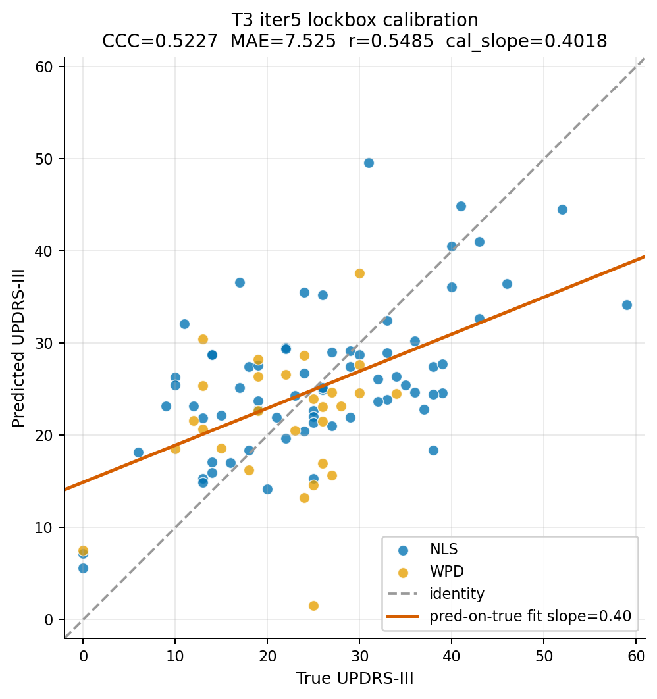
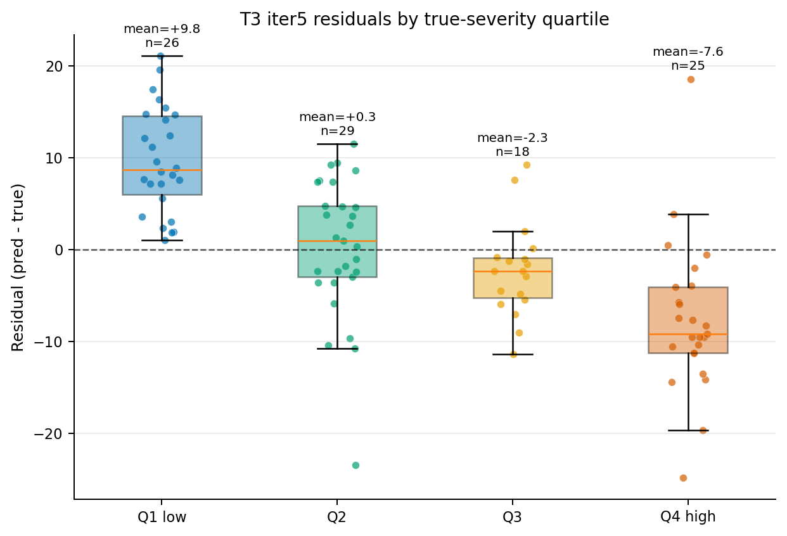
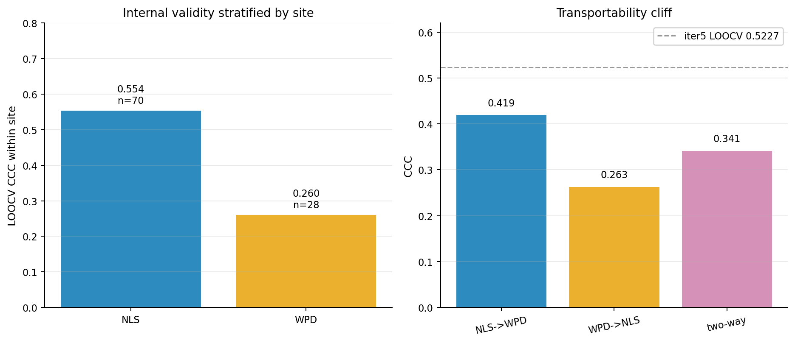
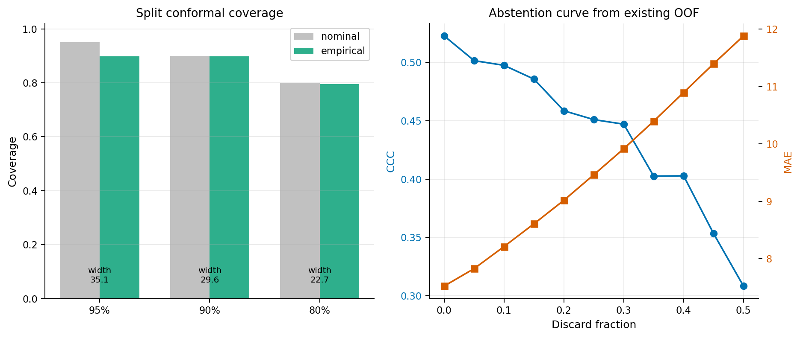
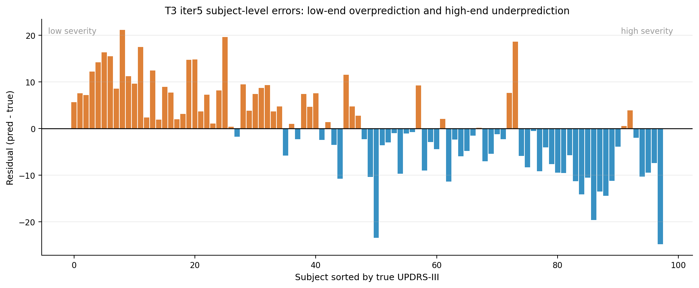

| quartile | n | true_mean | pred_mean | residual_mean | mae |
|---|---|---|---|---|---|
| Q1 low | 26 | 11.308 | 21.064 | 9.757 | 9.757 |
| Q2 | 29 | 22.000 | 22.269 | 0.269 | 5.798 |
| Q3 | 18 | 27.722 | 25.422 | -2.300 | 4.411 |
| Q4 high | 25 | 38.480 | 30.868 | -7.612 | 9.450 |
| site | n | ccc | mae | r | bias_pred_minus_true | true_std | pred_std |
|---|---|---|---|---|---|---|---|
| NLS | 70 | 0.554 | 7.591 | 0.597 | 0.398 | 11.784 | 7.980 |
| WPD | 28 | 0.260 | 7.359 | 0.261 | 0.069 | 7.471 | 7.048 |
| sid | site | y_true | y_pred | residual | abs_error |
|---|---|---|---|---|---|
| NLS201 | NLS | 59.000 | 34.154 | -24.846 | 24.846 |
| WPD019 | WPD | 25.000 | 1.540 | -23.460 | 23.460 |
| NLS121 | NLS | 11.000 | 32.100 | 21.100 | 21.100 |
| NLS173 | NLS | 38.000 | 18.368 | -19.632 | 19.632 |
| NLS141 | NLS | 17.000 | 36.586 | 19.586 | 19.586 |
| NLS033 | NLS | 31.000 | 49.593 | 18.593 | 18.593 |
| WPD023 | WPD | 13.000 | 30.482 | 17.482 | 17.482 |
| NLS146 | NLS | 10.000 | 26.328 | 16.328 | 16.328 |
| NLS172 | NLS | 10.000 | 25.484 | 15.484 | 15.484 |
| NLS101 | NLS | 14.000 | 28.747 | 14.747 | 14.747 |
| NLS183 | NLS | 14.000 | 28.718 | 14.718 | 14.718 |
| NLS159 | NLS | 39.000 | 24.593 | -14.407 | 14.407 |
results/lockbox_t3_iter5_A3_tier1_20260502_171604.jsonresults/t3_iter16_site_ipw_lockbox.jsonresults/t3_conformal_abstention_20260505.jsonresults/t3_iter5_deepdive/summary.json